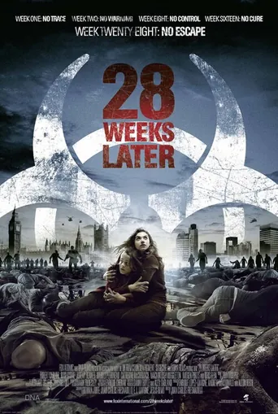

The genetics
Genetics enters as the hope for a cure. Major Scarlet Levy, the army medical officer and the film's sympathetic scientist, finds that Alice carries the Rage virus without symptoms because of a genetic anomaly, and argues that her body could yield a vaccine; she also notes that Andy has inherited his mother's heterochromia and concludes that the children's genetic makeup may be the key to a cure, so she risks her life to save them. The military command, embodied by General Stone, rejects this and orders the carrier killed and then the whole zone exterminated. The genetic hope is destroyed: Alice and Scarlet die, Andy becomes a carrier himself, and the final scene shows the virus reaching Paris. Critics read the film as an allegory of militarised crisis management. Asymptomatic carriers and inherited resistance to infection are real phenomena, though not in this fictional form.
How genetics is portrayed
- Overall portrayal of genetics
- mixed Genetic research is a genuine hope pursued by an admirable scientist and crushed by a ruthless military, yet the children she saves for their genes end up carrying the virus to the Continent, so the hope turns ironic.
- Outcome of the genetic intervention
- negative The genetic hope comes to nothing: Stone orders the carrier killed, the outbreak restarts, Scarlet is killed, and the carrier child she saved for his genes is flown to France as the virus reaches Paris.
- Major Scarlet Levy
- hero Aim: benevolent (positive). The army medical officer finds through blood tests that Alice is a symptomless carrier because of a genetic anomaly, argues to keep her alive to develop a vaccine, and dies protecting the children whose genes may hold a cure; the film presents her as the sympathetic voice of caution against General Stone.
The story
During the first outbreak of the Rage virus in Britain, Don abandons his wife Alice to the Infected in a farmhouse and escapes. Twenty-eight weeks later, the Infected have starved, and US-led NATO forces under Brigadier General Stone are resettling London through a guarded safe zone on the Isle of Dogs. Don is reunited with his children, Tammy and Andy, and tells them their mother is dead. The children sneak out to their old home and find Alice alive. The army medical officer, Major Scarlet Levy, discovers that Alice is an infected but symptomless carrier and urges that she be kept alive to develop a vaccine; Stone orders her killed. Don visits Alice, is infected by her kiss, kills her and starts a new outbreak. Stone orders everyone in the zone killed and London firebombed. Scarlet and the sniper Doyle protect the children, believing their genes could hold a cure, but both die; Andy becomes a carrier, and the children are flown to France, where the virus soon appears.